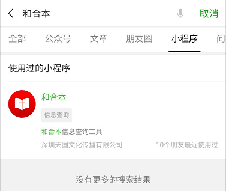

我们都有房子(包括继承购买或租来的房子),如果有人问我们房子是怎么有的?
我们一般连思考都不用就会回答说:首先得有个地皮，然后有人设计房子，建设装修好房子，买各种家具，然后就有了我们现在的房子,我们可以在房子里吃饭睡觉打豆豆。
我们的生活中只要是人设计出来的基本都有规律,比如我们的电视机必须有人打开后选择节目，它才会播放，因为这些问题我们常常经历，所以我们一般不会去思考它。
但是我们需要思考一下我们生活的地球，我们知道地球自转一圈是一天，地球围着太阳转一圈是一年，一年有春夏秋冬四个季节，春天的时候花草树木该干嘛,冬天的时候花草树木该干嘛,鱼生活在水里,鸟飞翔在天空,爬行动物生活在陆地。所有的一切都是有序的,不需要人们再去额外的操作，它会自动的按着它的规律走。
所以我们要思考的问题就是在我们生活的地球上，所有的一切都是那么的有规律，它真的是像某些人猜想中发表的言论那样由大爆炸炸出来的吗？答案肯定不是!
举个最简单的例子就是我们拿手机需要的材料放在一起,让它随便折腾它能成为手机吗？肯定不能的,就算它能成为手机，那么材料又是谁放的呢？
所以这个宇宙所有的一切肯定是有一位创造者，但是由于我们没有看过,我们每天生活在地球上，我们习以为常，很自然的，我们就不会去思考这些问题!
我们肯定会有疑问，就是既然有创造者,那创造者又是怎么来的呢?
我想拿我们手中的手机来解释神是从哪里来的这个问题:
我们知道手机里面有一个系统,这个系统就是手机里面的世界,而这个手机世界跟我们所生活的世界是两个完全不同的世界。
程序员开发一款软件后安装在手机的系统上,这个软件就可以按程序员所设定的运行,但是软件却不知道也不了解程序员是谁长什么样,除非程序员事先设计了让软件可以展示谁是它的创造者!
同样的道理我们人跟创造者的关系就好像软件与程序员一样,我们与创造者的思维/思想完全就不是在一个维度上,除非创造者启示给我们知道的外,我们对创造者一无所知!所以我们用人的思想来与创造者的思想对比首先就错误了!就好像软件有程序员赋予给它的思想,但是它的思想却与程序员的思想完全不在一个维度上一样。
我们的手机上的软件基本都有一个功能叫:[关于我们]这个功能的里面一般都会介绍它的创造者是谁,比如我们使用的QQ或者微信它们的创造者是腾讯公司,那么我们这个世界上有没有类似[关于我们]的这个东西呢？答案肯定是有的!那就是《圣经》,但是圣经我们肯定都会觉得它跟我们没有任何关系，我们也不会去看它，就好像我们在使用软件的时候，我们很少去打开[关于我们]一样，但是圣经却是启示了创造者是怎么样的一位创造主!
回归到谁是创造者的这个问题上,我们都知道，有一位神叫上帝，但其实上帝这个词在我们中国有一个另外一个很熟悉的词叫做:老天爷。但是对于认识创造者的人，却不是叫祂老天爷，而是叫祂天父!
这种关系我想用我们生活中的一个例子来说明一下:
假设:你的爸爸是 习大大,而我跟你不认识,那么我就只会知道有习主席,习大大。但是某一天我跟你认识了,你把我带到你爸爸的面前,你告诉你爸爸说:我是你的好兄弟好朋友,这个时候我因着你瞬间就由习大大变成了习叔叔了。
而创造者就是人们口中的老天爷,关于祂启示给我们人类的都记载在圣经里面,只有当我们打开“关于我们”我们才能去认识祂。
圣经里面告诉我们起初神创造了天地万物所有的一切，其中也包括了我们人类，但是神创造我们人类的时候却有一个不一样的地方,那就是神是按着自己的形象创造了我们人类，向人类灌输了特别的东西使我们成为了一个有神灵性的人。
这种关系就好像手机系统一样,程序员开发了一个手机系统,这个系统有可以调整音量.连接网络.拨打电话等基本功能,但是到了软件APP时程序员却给软件灌输了程序员的思想,使它能够模拟人类的思维一样。
这也就是为什么别的动物它们不会像我们人类有独特思想思维的原因,神特别爱我们人类给我们人类有自由的思想意识,所以当有人问人类是怎么来的时,人就算明知道答案是错的,人还是会回答说:人是由猴子进化来的,因为我们都没有看“关于我们”也不愿意去认识真实的由来!
人不是由猴子进化来的,就算人是进化来的也是由:人1.0版进化为人2.0版,也就是我们口中所谓的猴子只不过3岁时我们。人是神按着祂的形象而创造的,从一开始就是独立的一个类别!
因着我们从小到大身边给我们带来的环境影响,你可能不知道起初我们人类并不是像我们现在这样,至少起初人是不会死的,也不需要终日劳苦才能得到吃的!
起因:神特别爱我们人,给了我们人有自由的选择,神把人类的始祖安排在伊甸园里,并告诉人类的始祖说这个园里所有的都你都可以吃,唯独园中善恶树上的果子你不能吃,因为你如果吃了必定"死",但是人们有独立自由的意识,总是喜欢在作死的边缘试探,于是某一天人受不住诱惑还是吃了,从此整个世界都受到了咒诅,死也随着而来。
[这就好比:手机系统只要你不去使用某个功能,那么你的手机会一直好好的,但是有一天你还是开启了某个功能,于是你的手机中毒了,原来一个完好的系统从此就一大堆问题了!]
过程:人既然选择作死了,或者说神既然允许人作死,神真的就不管我们人类了吗?肯定不是的!
人选择作死后神就告诉人类说:虽然你们选择了死,但是我爱你们,我来为你们预备这个死的赎价吧,我来给你们买单!
但是神跟人不一样怎么买单呀,除非神变成人。出于爱,神真的就变成了人,因为死是从一个人带来的,这个代价必须有人来还,于是神自己就变成了人来还这个代价!
[这就好比:手机系统因为开启了某个功能,导致钱不见了,系统又不能生钱,肯定要有人来还这个价钱啊,于是程序员就说:我来还这个赎价吧,程序员把自己所有的钱都还上了]
最终:人选择了作死使整个世界受到了咒诅,神肯定不愿意啊,因为神一开始想给人的是一个美好的世界,但是人们选择了破坏,本来美好的世界因为一个人的选择导致千千万万人受影响,所以神就告诉人:现在这个世界我会毁灭掉,因为我已经为你们预备了另外一个世界,那个世界没有善恶树了所有的都是美好的,你们可以选择来或者不来,来的话就进入新的世界,不来的话就跟着现在这个世界一起灭亡!
[这就好比:手机系统因为人开启了某个功能,导致整个系统错乱了,于是程序员重新开发了一个新系统,这个系统没有会导致系统错乱的功能,然后程序员给手机系统发送更新消息,内容为:这个系统将会在不久后毁灭,系统所有的一切都会消失,请选择是否进入新的系统?用户如果选择进入新系统,那么用户就不会再有旧系统中的一切问题。如果用户一直选择不进入新系统,那么到了停止服务的那一天,系统就用不了]
我们人类原本不会死,不会有痛苦悲伤,但是因为人类的始祖选择了死,所以现在每个人都会死,但是我们死并不是等于就结束了,因为我们现在的死是因为始祖的选择所带来的,而神已经为始祖的选择买了单,到时候所有已经死了的人都会重新复活过来,都会到神面前为自己的选择受审判,如果你接受了这份买单那么你就进入永恒美好的新世界,如果你选择不接受这份买单那么你就会永远灭亡了。
[一个不形象的比喻:现在的世界就好比我们手机系统出了问题,现在的人们死了就好比手机没电了,到时候我们一充电手机又可以用了。手机系统有问题需要更新,但是旧系统上有资料你可以选择是否迁移到新系统上,如果选择迁移你就需要借助数据线或网络将旧系统上的资料迁移到新系统上去,更新到新系统后旧系统的所有一切都没有了!我们现在也一样可以选择是否迁移数据,如果迁移了,到时候到了新系统你还存在,反则到时候永远消失了]
因为人类始祖的选择导致了这个原本没有死亡、没有痛苦悲伤的世界变成了死亡且痛苦悲伤的世界,所以神为我们人类的选择买单并为人类预备了一个原本神想给我们人类的世界!
神不会强迫我们做选择,你可以选择是否进入新世界!
而我们的选择只有一个途径,那就是耶稣基督!因为在世界上没有赐下别的名我们可以靠着得救!
很高兴你能看完整篇文章,我写这篇文章就好像系统通知一样只是传达了这个福音,而认识神认识耶稣基督的途径就是从[关于我们]开始,也就是从《圣经》开始!
你可以在微信小程序中搜索 和合本

进行查看圣经,圣经分为旧约跟新约66卷书,我个人推荐你先看新约的约翰福音,再从头也就是再从旧约的创世纪开始看完圣经,看完后你就会发现很多事情事迹都不是传说!
你可以通过邮箱联系到我,
我的邮箱为: szmirren@qq.com